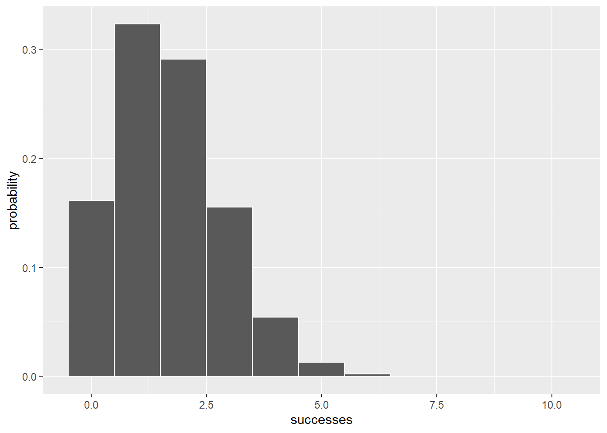

factorial(6)[1] 720Suppose you have to arrange \(N\) objects into a sequence. In general, the number of sequences of \(N\) objects is \(N(N-1)(N-2)...(2)(1)\) and it has its own notation: \(N!\). Suppose the task is to create \(r\)-objects sequences out of \(N\) objects. Each sequence is called a permutation. In general, if you take permutations of \(N\) things \(r\) at a time, the notation is \(_{N}P_{r}\). The formula is
\[_{N}P_{r} = \frac{N!}{(N-r)!}\]
Further, if repetitions are allowed in these sequences of \(r\), the number of sequences is \(N\) to the power of \(r\), mathematically written as \(N^r\).
For permutations, the sequences are different if the order of the objects in the sequences are different. However, for combinations, if the objects are the same and they are only different in order, they will be treated as the same sequence. In general, the notation for combinations of \(N\) things taken \(r\) at a time is \(_{N}C_{r}\). The formula is
\[_{N}C_{r} = \frac{N!}{r!(N-r)!}\]
R provides factorial() for finding the factorial of a number:
You can also use this function to find the factorial of each number in a vector:
For combinations, R provides a couple of possibilities. The choose() function calculates \(_{N}C_{r}\) - the number of combinations of \(N\) things taken \(r\) at a time. So, for four things taken two at a time, that’s
To list all the combinations, use combn(). To illustrate with \(_{4}C_{2}\), a vector containing the names of four of the Marx Brothers is created
and list all possible combinations of them taken two at at time:
[,1] [,2] [,3] [,4] [,5] [,6]
[1,] "Groucho" "Groucho" "Groucho" "Chico" "Chico" "Harpo"
[2,] "Chico" "Harpo" "Zeppo" "Harpo" "Zeppo" "Zeppo"This matrix tells us that six such combinations are possible.
We now use the R code to confirm that the number of outcomes for selecting objects with repetition (replacement) is \(N^r\), that is selecting \(r\) objects from a pool of \(N\) objects with replacement.
Suppose that there is a bag containing four balls with colours red, blue, green and yellow. We will totally draw two balls. After drawing one ball, we put it back to the bag and then drawing the other ball. In theory, the total number of combinations of the selected balls are \(4^2\), or 16. We use the expand.grid() function to perform this experiment.
Colour_1 Colour_2
1 Red Red
2 Blue Red
3 Green Red
4 Yellow Red
5 Red Blue
6 Blue Blue
7 Green Blue
8 Yellow Blue
9 Red Green
10 Blue Green
11 Green Green
12 Yellow Green
13 Red Yellow
14 Blue Yellow
15 Green Yellow
16 Yellow YellowOr you can display the number of outcomes by:
gtools packageFirst, we load the gtools package:
Here are the combinations() and permutations() functions from gtools at work:
[,1] [,2]
[1,] "Chico" "Groucho"
[2,] "Chico" "Harpo"
[3,] "Chico" "Zeppo"
[4,] "Groucho" "Harpo"
[5,] "Groucho" "Zeppo"
[6,] "Harpo" "Zeppo" [,1] [,2]
[1,] "Chico" "Groucho"
[2,] "Chico" "Harpo"
[3,] "Chico" "Zeppo"
[4,] "Groucho" "Chico"
[5,] "Groucho" "Harpo"
[6,] "Groucho" "Zeppo"
[7,] "Harpo" "Chico"
[8,] "Harpo" "Groucho"
[9,] "Harpo" "Zeppo"
[10,] "Zeppo" "Chico"
[11,] "Zeppo" "Groucho"
[12,] "Zeppo" "Harpo" If all you want to do is solve for the number of combinations:
Of course, you can do the same for permutations.
The discrete random variable \(x\) is the number of successes in \(N\) trials. This type of experiment is called a binomial experiment. The probability distribution for \(x\) follows this rule:
\[pr(x)=\frac{N!}{x!(N-x)!}p^x(1-p)^{(N-x)}\]
R provides the following functions for the binomial distribution: dbinom() (density function), pbinom() (cumulative distribution function), qbinom() (quantiles), and rbinom() (random number generation).
To show a binomial distribution, we use dbinom() to plot the density function for the number of successes in ten tosses of a fair die.
The first argument in the dbinom() function is the number of successes, the second is the number of trials, and the third is the probability of success.
To plot this density function:

The NULL argument ing ggplot() indicates that we haven’t created a data frame - we are just using the successes and probability vectors. In geom_bar(), the stat="identity" argument indicates that the values in the probability vector set the heights of the bars, width = 1 widens the bars a bit from the default width, and color = "white" adds clarity by drawing a white border around each bar.
We use pbinom() to show the cumulative distribution for the number of successes in ten tosses of a fair die:
And here’s the code for the plot:
The qbinom() function computes quantile information. For every fifth quantile from the 10th through the 95th in the binomial distribution with \(N=10\) and \(p=1/6\):
To sample five random numbers from this binomial distribution
In a sequence of independent Bernoulli trials with success probability \(p\), if \(X\) is the number of failures before the \(r\)th success, then \(X\) is said to have the Negative Binomial distribution with parameters \(r\) and \(p\), denoted \(X \sim NBin(r,p)\).
\[P(X=n) = \dbinom{n+r-1}{r-1}p^r(1-p)^n\]
For the negative binomial functions, dnbinom() provides the density function, pnbinom() gives you the cumulative distribution function, qnbinom() give quantile information, and rnbinom() produces random numbers.
Hence, the probability of five failures before the fourth success, using dnbinom(), is
The first argument to dnbinom() is the number of failures, the second is the number of successes, and the third is the probability of a success.
If I want to know the probability of five or fewer failures before the fourth success:
which is the same as
For every fifth quantile from the 10th through the 95th of the number of failures before four successes (with \(p=1/6\)):
And to sample five random numbers from the negative binomial with four successes and \(p=1/6\):